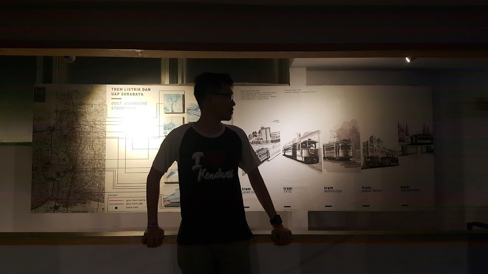
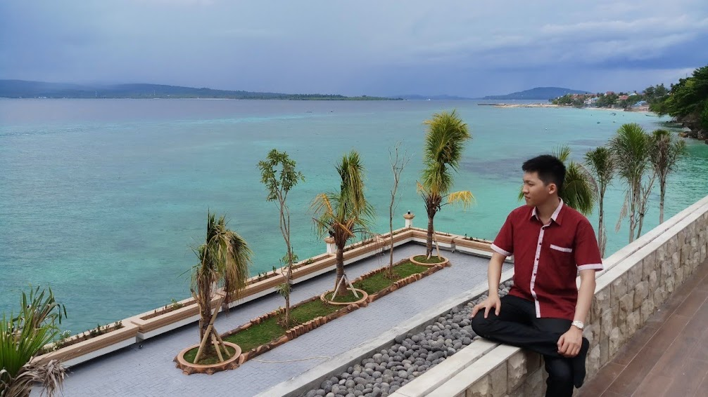

nice to meet you!

| Full name | Hendrik Lie, S.H., M.Kn. |
| City of birth | Bau Bau, Southeast Sulawesi, Indonesia |
| Gender | Male (he; his) |
Hendrik is a lawyer. He specializes in civil law, contract law, legal research, and drafting. Being a perfectionist ensures that he would only deliver results to you for any work assigned to him when he’s satisfied with its quality. He enjoys challenges, and is determined to solve any challenges that might interest him. That without saying that he’s very interested in good cases.
His English proficiency is so good that he can casually skim through a large body of English text without trouble in understanding it. Computer is his playground, and with just a few keystrokes, he can tidy up even the most badly formatted document. No weird Operating System or Office suites available in a workplace is a hindrance for him, being familiar in Windows and Linux alike. Having him in your team would be very helpful in working out the nature of your software suites.
Hendrik Lie is also an aspiring writer of both fiction and non-fiction. He enjoys the works of Isaac Asimov, George Orwell, Cory Doctorow, Douglas Adams, and Dee Lestari. His kind soul makes him incapable of hurting animals, or evoking unnecessary pain to them. His wish was to publish at least a fiction book and a nonfiction book in the next five years. His everyday life consists of reading various articles of interests, and checking cryptocurrency price movements.

A good resume is not complete without a good list of skills! This section will guide you through a summary of Hendrik’s skills and strong points.
Hendrik is a proud alumni of Universitas Surabaya, and completed his Bachelor of Law in August 2017. His graduate thesis pertains to the application of Corruption Eradication Act for a Corporate subject. He focuses more on Identification Theory for prosecuting a Corporation, and in what manner can a Corporate subject be prosecuted by the Law. However, following through his thesis, one would find that he follows through all the necessary steps in a legal research.
How could he be proficient in Civil Law when his graduate thesis focuses more on Corporate Criminal Law? Turns out, through a sequence of events, Hendrik decided to take a Postgraduate Study in Universitas Airlangga, a renowned Public University in East Java. He aims for a Master Notary degree, through which he graduates at March 2021. Over the course of his study, Hendrik picked up a vast knowledge and prowess of both Contract Laws and Agrarian Laws.
His exposure to computer started since about a decade ago, and expands further after his decision to migrate to Linux and open source software suites. His understanding of how computer stores information allows him to very efficiently identify what causes a formatting error in a Word document, or even to build up a working lookup table of previous cases and clients in an Excel spreadsheet. At other times, he was asked to clean up a scanned document digitally, and he managed to deliver a crisp and clean image out of a badly lit document photographs.
It is not a joke, and he had it tested! English language comprehension is effortless for him, and he can easily skim through a large body of English text without much trouble. When required, he can also translate a text from one language to the other. Though it is worth noting that word to word translation is highly inefficient, and in the process of translating, he often paraphrase the text in a manner that makes more sense in the target language, while trying to convey and conserve main ideas of the source text.
It is not very hard to find him. All you have to do, is to send him a “hi.”
: hendriklie72@gmail.com |
|
| Phone/WA | : +62-812-4151-0555 |
| VCARD | : download |